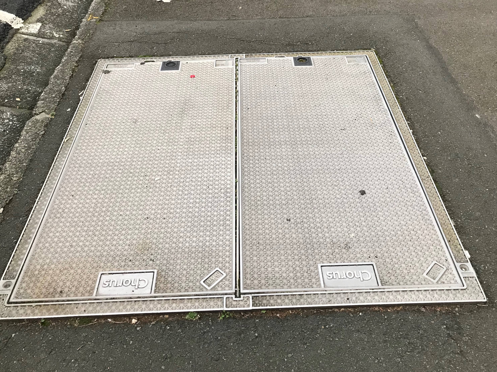
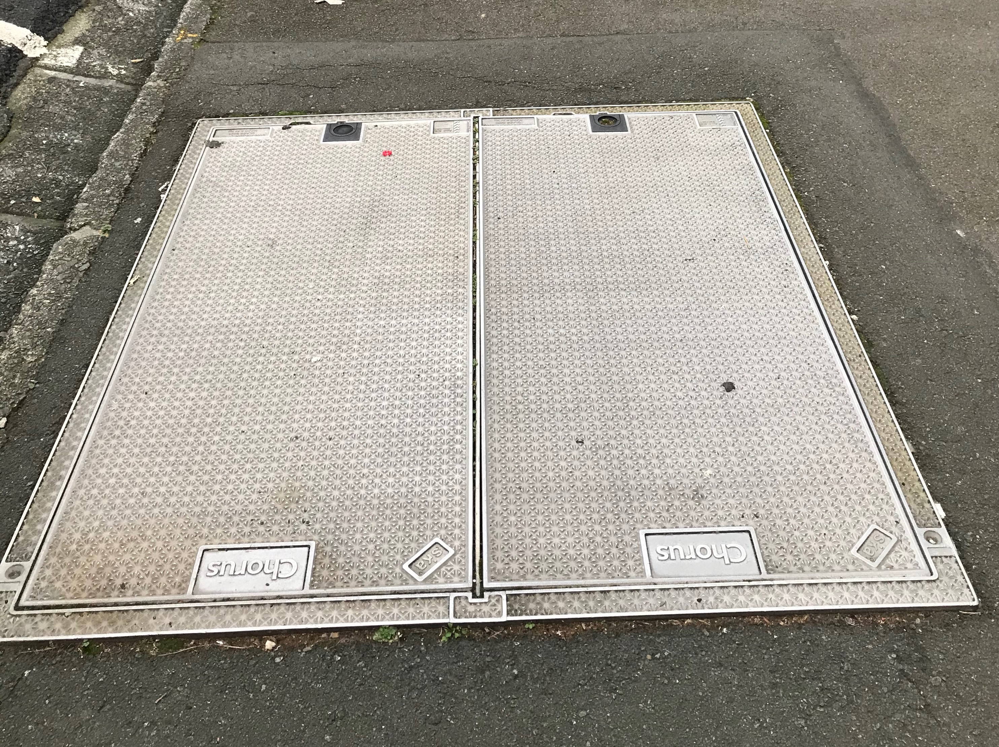

Wellington's internet infrastructure is visible yet kept, which suits the simplistic well-kept appearance of the city. These infrastructures can be found around everywhere in the city, more commonly around intersections and busy areas where buildings need access to the internet.
These outdoor wireless antennas are everyday infrastructure we are familiar with. They provide a boost in the Wi-Fi range and television range of our signal.
A large powerful Wi-fi antenna is important in businesses as it involves heavy wifi traffic. They are commonly placed outside the highest point of buildings or houses to avoid inteferance. Interferance attacks and reduces the signal strength. Reducing this by placing the antenna at the highest point ensures businesses, organisations, and homes that they can obtain reliable internet 24/7.
In this modern times, digital TV's are capable of sharing signals from a TV antenna. This avoids a cluster of cables from being installed.
Common and noticable in the inner city are manhole covers where it is possible to access the network.
 

Information in the chorus website states they gain access to thier underground network through manholes of various sizes – some are simply a small access pit in the local street, while others are really large cable chambers, like those found in inner city streets. They don’t need to replace manholes often so some may still display the Telecom or older Chorus logo.
Traffic and servaillance cameras are evident around the city. These are connected to the internet as it sends the data to the reciever. All though controversial when talking about privacy rights, it has maintained in keeping the streets safe and in order
The Internet speed needed for security cameras is around 1Mbps and up to 2.5Mbps for higher resolution videos. Twentyfirssecurity.com.au stated a wireless security camera system can be an effective and convenient method of improving security on your property. The big benefit about wireless security cameras is that they transmit data wirelessly from the camera to a receiver. This means you don't have to run a data cable through your building or property.
Spark phone boxes and wifi spots & bus RTI display screens are one of the many infrastructure that connects to the internet.
The Spark phone box provides free public access to wifi. Connecting to the booth will send data to the provider and will enable you to use free wifi if you are a spark member or be given 15 minutes of free wifi for non members.
Bus stops have RTI display screens that provide information to commuters around the city. It is connected to the metlink network where its data is continually updated. This provides commuters reliable updated information at any given time.